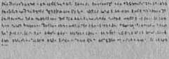

The Bible’s Answer
By J. F. Rutherford
Publishers:
INTERNATIONAL BIBLE STUDENTS ASSOCIATION WATCH TOWER BIBLE AND TRACT SOCIETY Brooklyn, New York, U.S.A.
Also: London, Toronto, Melbourne, Stockholm, Cape Town, Berne, Magdeburg, etc.
WHERE ARE THE DEAD?
A satisfy in.", and heart cheering answer from the Bible,
wi ll ten by
J. F. RUTHERFORD
Author of
“Deliverance”
“The Harp of God”
"Comfort for the Jews”
“Millions Now Living Will Never Die”
"Comfort for the People” etc., etc.
PBINTKD IN THE U. S. 4.
Copyrighted 1927 by i
International Bible Students Association
- Sroolilyn- New York. U. S. 4>
' ■> -j
UU-UMiWiV^ gr,ir»» OkCCwpr.H <1 »»i»» «n . |
KILLED BY AUTOMOBILE
ADAM JOY, son. of David and Rebecca Joy, age 23, struck by an automobile and killed.
S Wrf. O14U fk.
THIS was the headline in the Daily Chronicle, morning paper, published in the town of Summerville, Connecticut. The Joy family was prominent in business and social circles there. The death of their eldest son had caused much comment in the community. A great number of people attended the funeral, but there was no funeral discourse.
None of the Joy family were members of any church. Adam had been in the draft, was in training at camp for several mor As, and had expected to be in the next regiment to go overseas, when the war ceased. His soldier comrades buried him, without the aid of a clergyman, and this caused much comment in the 'community, especially amongst the old women and gossipy men. 3
Only two months previous to Adam’s death the Armistice had been signed. America did not get into Hie war uniil the latter part of it; but when fin* roll w.c- called at the conclusion of hostilities it was found that more than one hundred llimi-and of (he flower of American manhood had fill mi in hndle. Many other thousand < bad d'i'd from din-are and exposure.' The slain of nil the mdimi" in Ilw great war were numb red by the millions. Besides the war, there also camo upon i-ome of the countries a terrible famine. In one land alone there were twenty-nine million p 1 ,.l< who died from starvation.
Near the conHe hid of 11 v a.r (he world was afflicted by a terrible lib iw<>, during which the people died I'l.c Ilies with the coming of frost. The p< 'slilmtvv v. as nol confined to the war-stricken I'ou-nlrie.i hid, spread all over the earth, from the frozen w s of the north to the heated lands of the omdh. A great pall seemed to hang over the whole carih.
When a l< rribh? i-idmnih lud'alls a people some of them hei'.in Io lliink. They were now thinking, and die imdd< n «!<• lh of a prominent person in ilw cmnmutiil \ h id brought freshly to mind the ri.ml number id' deaths in recent years. Time and again die question was being propounded one to another: “Where are the dead '?■’
When the war cmne Ilw clergymen preached in favor of tin nr, urging young men to join the army, and telling them from their pulpits that those who died upon Ilie I title-field would go straight to heaven. Some one suggested then that if the clergymen were right in their conclusion it would be well for all to die upon the battle-field. It is evident that the clergymen did not believe their own statements, because they kept away from the front.
The great death rate caused by the famine and pestilence was the basic theme of many a clergyman’s discourse, though the opinions expressed by the various preachers differed somewhat. The Chronicle made it a business to publish excerpts from some of these sermons, and sometimes a sermon appeared in full. Of course these were read by the people in the community, particularly by those who had lost some loved one.
The Catholic clergymen stated that if one who was a good Catholic and wholly faithful to his church should die, then he would go straight to heaven at death; but that if he was a good Catholic, yet had come short in keeping his vows, then at death he would have to go to purgatory and there remain for an indefinite time, and that he could be relieved from this condition of suffering by the prayers of the priests or preachers; but that if one dies who was not a Catholic, or was not a member of any church, and was therefore wicked, then at death he must go to a place of everlasting suffering, eternal torture,a condition from which there could be no relief; and this the preachers called hell.
The Protestant clergymen in their sermons differed somewhat from the Catholics. The substance of the Protestajnt preachers’, conclusions was that if one dies who at the time of death is a member in good standing of some church then he immediately goes to heaven, and there from that time forward enjoys endless bliss; but that if the one dis not a member of the church, and th'-refore is of those whom they generally term the godless, lie would have to go to a place of eternal torment whore he would suffer conscious torture, eternal in duration, and from which there could never be any relief.
About the l ime these sermons were being published th local paper also curried a small paid advertisement, announcing Unit there would be a public lecture delivered nt the Town Hall on a certain Sunday afternoon, by a Mr. Timothy Goodman, on the subject, “W11ERE ARE THE DEAD?” The clergymen, both Catholic and Protestant, advi' ed their congregations to stay away from that lecture, win ning them that it was dangerous. The lecture wns given and the attendance at the Town Hall was small, but those who did attend had much to say about the lecture. The result was that n number of the citizens pulled down from (heir old book-shelves their dusty Bibles and begun to examine as to what the Bible says about those who die.
It was a cold wintry evening. That day the funeral of Adam Joy had been lr Id. Members of the Joy household were seated around the fireside, each one in silence meditating upon the terrible calamity which had befallen their home. Adam Joy was a prominent young man. He had already finished id college, mid it was expected that soon he would begin his professional career. Since the war was ver ho had not expected to reenter the army 1 • J '.<• take up the practice of law.
Neither Adam nor his parents had ever been interested in the churches; the parents had made no effort to send the young man to Sunday school or to church, and he had not gone. Having recently passed through college he had learned to have little respect for the Bible, because of what was taught to him there. He was a lively young man, given to harmless pleasures, and one whom the sanctimonious of the neighborhood would consider quite worldly. But all who knew him well would bear witness to the fact that the young man was honest and trustworthy.
The clergymen had stated, and the local press had published their statements, that people living in a Christian community owe special duty to the church; that every Sabbath morning the people are warned by the sounding of the church bell to come and hear the sermon; and that if they do not come, and then die while in that unsaved! condition, they die in their sins, and that a hell of eternal torture is their inevitable destiny. Mr. and Mrs. Joy had read these statements.
The silence of the Joy household on the evening mentioned was broken by an occasional lieart-rending sob from the mother. To console her in her grief her husband said: “Rebecca, I cannot believe that our son is in that awful place of fire and brimstone, suffering torture. We would not even torture our neighbor’s vicious dog in that manner. I have heard it said that God is love, and if that is true it certainly would be impossible for a loving God to torture our dear boy for ever.”
‘■But,” responded Mrs. Joy, “do not all the clergymen say that those who die outside of the church go to that terrible place? I wish that I could believe that our son i ■ somewhere else. But where is lie 1 I believe my heart will break if this sulf ring suspense coniinut's; and then I shall join my sou. wherever he is.”
"Daddy, Ik. My, may I say something!” Thus spoke little Samuel, the younger son of the household. With a look of approval from his father the lad continued: “You remember a short time ago some man gave a lecture at the Town.Hall about WIIEI.’E ARII 'i’ll IC DEAD? Well, I heard Henry Smith say that he was with his mother at church that day, and Im says the preacher told the people to stay away from (hat lecture. But, Daddy, 1 went to see what kind of a man that was, and Henry and I went down and stood at the door. I looked in once and saw the man on the platform. He did not look so b:ql. I saw another man at the door selling some books and telling the people that they help them understand where all the people are that have died and where they have gone. Daddy, I saw that man today in a yard down the street. 1 believe I can find him. Will you not let me go and fetch him here? Alaybe he can tell us where Adam is.”
The request seemed a reasonable and sensible one, and it was agreed that the boy should go next day and look up this man and invite him to the Joy home. The ne?:t morning little Samuel Joy found the man who had sol. I (he books, learned that his name was John Remnant and that he was a carpenter who spent his odd time dolporteuring and comforting those that mourn.
He. readily responded to the invitation and came to the Joy home the next evening. Acquaintance was soon made with the grief-stricken family, and they propound'd to him the question: “Where are the dead?'’
; Searching the Scriptures
Sometimes sorrow will cause a man to earnestly inquire, and reason upon what he hears. With sad hearts but hungry minds the Joy family listened to Mr. Remnant that winter evening. Addressing his remarks to Mr. Joy he said:
“Permit me to say, Mr. Joy, that of my own wisdom I cannot answer your question. I am neither a clergyman, a prophet, nor a seer. I am but a plain man. I love the Lord God and I serve him as best I know how; and I am certain that your question is plainly answered in his Word, the Bible, If you are willing for me to point out to you these truths in the Bible I am confident that the evidence will bring satisfaction to all of you, and I shall be glad of the opportunity thus to help you. If you will reason upon this Scriptural evidence I feel sure that you will fmd consolation in the answers there given.
frLet me assure you in the outset that the Bible has been grossly misrepresented by men who claim to believe it, and the worst among those who have misrepresented it are the clergymen or preachers who claim to teach it. They have misrepresented Jehovah God himself, as well as his Word. But understand me, I have no harsh feeling against them. They are not wholly to blame but have been overreached by dur common enemy, as you will see when we examine the evidence."
Being assured by Ai r. Joy that he and his family would be pleased to have the Scriptural answer to their question, Mr. Remnant proceeded to give it:
Where Are the Dead?
The clergymen wotdd make you believe that God took away your son, but I am going to prove to you that God did not take away your son. No wonder so many people are in great distress caused from the death of loved ones, and cry out: “How can a just and loving God let my dear ones die I1’ But I hope to explain to you that God does not cause them to die. The clergymen say that all who die go immediately to heaven, purgatory or eternal, torment; and the latter they call hell.
We are going to consider these places in the order named, that you may follow what I have to say. I state now that I am going to prove to you from the Bible that your son is not in heaven, that he is not in purgatory, nor in eternal torment. Then I will show you from the Scriptures where he is, why he died, and that there is hope, of your seeing him again and being happy with him for ever. With these points in mind you will be better able to follow the proof submitted and the points as made.
Heaven
Heaven means high, lofty and exalted. Jehovah God dwells in heaven. God is a spirit invisible to man. No man has ever setm God or ever can see him. Only spirit beings can see Jehovah. Jehovah has said: “For there shall no man see me, and live.” (Exodus 33:20; 1 Timothy 6:16) It follows then that your son cannot be in heaven unless he is no longer a man but a spirit. We would require more proof than the mere opinion of man that your son is now a spirit.
You well know that the clergymen fix two places, and only two, where all must ultimately find an eternal habitation or abiding place, to wit, heaven and hell. Their argument is that the good go to heaven, that many go to purgatory to get cleaned up, but that ultimately all land either in heaven or in eternal torment.
In the eleventh chapter of Hebrews there is a long list of good men named. They include men from the time of Abel to the last of the prophets. These men were all approved by Jehovah and therefore are counted as good men. If the clergy are right in saying that the good go to heaven we will surely expect to find that all these men went to heaven. On the contrary the Scriptures show that none of them ever went to heaven and never will be there. Some of them had been dead for four thousand years when Jesus was on earth, and Jesus plainly said at that time: “No man hath ascended up to heaven.” (John 3:13) He is the best witness, because he came from there and knows. Certainly it would not require four thousand years to go from earth to heaven.
In order to set this matter for ever at rest David is taken as a specific case. Not only was David approved, but he was so devoted to the Lord that it is written of him that he was a man after God's own heart. (Acts 13:22; 1 Samuel 13: 14) Then concerning David it is written: “For David is not ascended into the heavens.” (Acts 2: 34) John the Baptist was a good man, received the approval of God, and was the one whom Jehovah selected to announce the coming of the Savior of the world. Yet the Scriptures plainly state that John the Baptist will never be in heaven.—Matthew 11:11.
Now since the Scriptures prove conclusively that the preachers are wrong about all the good going to heaven, that should be sufficient cause for reasonable men to look with suspicion upon everything else they say. At least we should require strict proof of every claim they make as to the dead.
Purgatory
The Catholic system, and some preachers of the Protestant church, so-called, teach the doctrine of purgatory. Their theory is that a man who dies in sin, but who is not wholly lost, is taken to a place called purgatory, and that there he is punished for an indefinite period of time or until a sufficient number of prayers have been made for him that he might be relieved and taken to heaven. It is usual for some friend of the dead person to pay a certain sum of money for the saying of the prayers.
The people rely upon the preachers and priests to tell them the truth, and not knowing any better they believe what the preachers tell them. These inform the friends of the dead that prayer said by a priest will in due time get him out' of purgatory. The follpwing statement made by the vent-id io Cardinal Gibbons is authority from the .-Catholic St stem upon this point:
The Catholic church teaches that besides a place of eternal torment lor the wicked, and the everlasting rest for the righteous, there exists in the next life a middle state of t.-mporary punishment, allotted for those who have died in venial sin, or who have not satisfied the justice of God for sins already forgiven.. She also teaches us that although the souk consigned to this intermediate state, commonly called purgatory, cannot help themselves, they may be aided by tire suffrages [prayers] of the faithful on earth. The existence of purgatory naturally implies the correlative dogma—the utility of praying for the dead—for the souls consigned to this middle state have not reached the term of their journey. They are still exiles from heaven and fit subjects for divine clemency.—FAITH OF THE FATHERS, page 205.
Not even this learned writer submits one Scripture te^t in proof of the purgatory doctrine. He does submit the words of men, who were member’s of the Catholic system, then asks us to take their opinions as to purgatory. We cannot afford to do this, because none of these men were ever in such a place and returned to testify of the conditions there. Dante was a clergyman in the Catholic church. He wrote a book in verse concerning purgatory. He describes poor men there undergoing various kinds of punishment, some of them bitten by rep ides, others standing on their heads in boiling- vats of oil, others in holes of fire and brimstone. and others suffering in many other forms,,
Dore, a distinguished artist, illustrated Dante’s imaginations, and these pictures are used to frighten people concerning the terrible sufferings of their beloved dead; and it is an easy matter to induce those who thus believe to part with their hard-earned coin to get prayers said in their behalf. These theories are supported by such men as Jerome, Ambrose, Chrysostom and others, but not by the Bible. The net result of purgatory has been a good source of revenue for the clergy and broken bank accounts for the poor people. The prayers said for the dead never get above the heads of those who utter them.
It does not seem reasonable that the good God would fix a place, such as Dante describes, and then permit men to use that for commercial purposes. Is it reasonable that God would hear the prayers of men in behalf of some poor soul when that prayer is induced by a monetary consideration! The Lord's view of commercializing his Word, or any part of his service, was expressed by Jesus thus: “It is written, My house shall be called the house of prayer; but ye have made it a den of thieves.’’—Matthew 21:13.
Not only is the doctrine of purgatory without support in the Scriptures but when we come to examine the Scriptures as to the real condition of the dead we find positive proof that purgatory is a fraud and a snare, invented by the enemy of man and used against man’s interest for centuries past. You will notice that Cardinal Gibbons says in the quotation above that the poor unfortunate fellow in purgatory cannot help himself, but some priest is presump-’cuous enough to tell the people that he can help him provided, there is a suffident consideration.
Eternal Torment
Since the Scriptures prove positively that the preachers are wrong in their statement that the good go direct to heaven at death, and since there is no Scriptural support whatsoever for purgatory, we are inclined to look with much skepticism upon the doctrine of eternal torments which has been rolled under the tongues for centuries as a sweet morsel. Briefly, the teaching of the preachers is that the wicked are consigned for ever to a place of literal fire and brimstone, that there the fire never ceases, and that the poor creatures are tormented in that place for ever, with no possible opportunity to escape.
You are a reasonable man. Let us now use our reasoning faculties some. God says to man: “Come now, and Let us reason together.” (Isa. 1: 18) Is it reasonable that any life can exist for ever in fire? No creature can exist without a body or organism, and when a man dies the body is dead and you put it in the grave. Is it reasonable that God gives that creature an asbestos body so that he can be burned for ever?
“God is love.” Is it reasonable that love can find an expression in the eternal torment of anyone? God is good, and everything that he does must be consistent with himself. What good could result from tormenting one for ever? You Would not torment your dog for a day. Is it reasonable that a good and loving God would torment your son for ever?
Unconscious
Your son could not be in heaven enjoying the beauties and happiness of that place, nor in purgatory undergoing punishment, nor in eternal torment, without having a knowledge thereof. He must be conscious if he is in any of these places, if they are what the preachers describe them. If the Scriptures show conclusively that he is unconscious would not that prove that neither the theory of going to heaven, purgatory nor heli torment is the correct one? Now what do the Scriptures say about the dead ? Are they conscious or unconscious?
“For the living know that they shall die; but the dead know not anything. . . . Whatsoever thy hand findeth to do, do it with thy might; for there is no work, nor device, nor knowledge, nor wisdom, in the grave whither thou goest.”—Ecclesiastes 9:5,10.
“For in death there is no remembrance of thee: in the grave who shall give thee thanks ?” —Psalm 6:5.
“Like sheep they are laid in the grave [sheol]; death shall feed on them.”—Psalm 49:14.
“The dead praise not the Lord, neither any that go down into silence.”—Psalm 115:17.
These scriptures conclusively prove that when a man dies he knows not anything; that when dead he has no knowledge or wisdom, and does not -work; that he has no memory; that lie is in a condition of silence. That is not very consistent with the theory of being in bliss or standing on his head in a vat of boiling oil or being otherwise tortured by fireproof devils wearing asbestos coats.
The Soul
IT,
The body of your son was laid in the grave. He was unconscious at that time. If he is in heaven or purgatory or torment what part of him is there? The clergy will answer that the body is dead, but will insist that the “immortal soul” of your son has left the body and has gone to heaven, purgatory or to torment. Again they are flatly contradicted by the Lord’s Word.
The Soul
No man has a soul. Every man is a soul. The word soul means being, creature, or man. God did not make a man and then put a soul in man, as the preachers tell us. This is the way he made man, as stated in Genesis 2:7: God made man’s body out of the earth. All his organism was made from the earth. Then God breathed into his nostrils the breath that all living creatures breathe, and this animated the body, and the man stood up and lived.
All the animals are designated as souls. A cow is a soul and an ox is a soul. Note Nmnbers 31:28, in which the Lord says that the beeves, asses and sheep are souls. The preachers have made the people believe that a man carries a soul around in him and that when he dies the soul hikes off to some other place. But there is absolutely no support for such a contention.
Immortality
In order to support their purgatory and eternal torment theories it was necessary for the advocates thereof to try to find that the soul of man is immortal. Immortality means that which cannot die. It is easy to be seen that no being could be for ever in hell torment or in heaven or in purgatory if that creature could be killed. Therefore the master mind back of these doctrines said: “We r est say that the man has an immortal souk’’ Now if we find that the Scriptural proof is that man is a mortal soul, subject to death, then the purgatory and torment theories must be completely false.
When God made man and placed him in Eden he said to him: Tri the day that ye sin ye shall surely die? (Genesis 2:17) That was the plain statement of God’s law. Did he mean that only the body should die? The answer is: “The soul that sinr.< th. it shall die. . . . The soul that sinneth it shall die.” (Ezekiel 18:4.20) “What man is he that liveth, and shall not see death? shall he deliver his soul from the hand of the grave?”—Psalm 89:48.
Devil’s Lio
The only support for the theory of immortality of all souls is founded upon a lie which was told by the Devil himself. He knew that God had told Adam that the eating of certain fruit would cause him to be sentenced to death, lie approached Eve in order to get her first on his side, and said to her: ‘You can eat of that food, and if you eat it you will be as vise as God himself. For ye shall surely not die.’ He induced Eve to violate God’s law.
Which one told the truth? God said: We shall die.’ The Devil said: ‘Ye shall not die.’ Jesus answ’ers: “Ye are of your father the devil, and the lusts of your father ye will do. He W'as a murderer from the beginning, and abode not
'/.mrlzortaTitif '
19
in the truth, because there is no truth in him. When he speaketh a lie, he speaketh of his own: for he is a liar, and the father of it.”—John 8:44.
For a long while the preachers have been telling the people: “There is no death”; that when a man dies he has gone either straight to heaven or to purgatory or to eternal torment; that there is only one hope for him while he lives, and that is to join our church and go to heaven; and that there is only one hope for him when he dies, and that is to employ us to pray him put of purgatory. Of course a man would have to be immortal before he could be subject to this kind of torture. Hence the necessity for- the invention.
Who Is Immortal?
The Devil himself is not immortal, because the Scriptures show that God is going to destroy him in due time. (Hebrews 2:14; Ezeldel 28:18) We might with propriety propound to the preachers this q 'stion: If hell is a place of eternal torment, and if the Devil is the chief fireman, who is going to keep up the fire when the Devil is destroyed?
A Christian is admonished to seek immortality. (Romans 2:7) A man does not seek that which he already possesses. God alone possesses the quality of immortality, as it is written: “'Who only hath immortality, dwelling in the light which no man can approach unto; whom no man hath seen, nor can see: to whom be honour and power everlasting.”—1 Timothy 6:16.
When Jesus was on the earth he was not immortal, but God gave him immortality at his resurrection. (See John 5:26; Revelation 1:18) The faithful overcoming Christiana are promised immortality as a glorious reward, as. it is written: “This mortal must put on immortality.” (1 Corinthians 15:53) It woul ; be i' eov •istimt for the Lord to have put that into his Wo'rd if man were already immortal.
Now these scriptures show that man is a soul; that he is subject to death: that he is therefore not immortal; and these tilings Irnng true it must follow that a man, when he dies, could not immediately go to heaven, purgatory or eternal torment.
Hell
Now we shall prove that hell is not a place of eternal torture. Hell means the grave. There is where your son is. Ue is unconscious. He is not suffering. In God’s own due time he will be awakened out of death and will be brought back, and will then have an opportunity to dwell with you and you with him for ever upon this earth, in peace an<' happiness* If .you can see and believe these Scriptural statements then you would have hope of seeing your son again; and having that hope, you would not sorrow as do .those who have no hope. (1 Thessalonians 4:13-1.8) Let us now examine the Scriptures further and see that these statements are true.
The Bible we have was translated from other languages. The Old Testament was translated from the Hebrew and the New Testament from the Greek. The English word “hell" is derived from the Hebrew word sheol; and the Greek words hades, Gehenna and tar'ru are also translated hell in the Scriptures. As winter time ap-
Hell proaches a fanner gathers his carrots and turnips, digs a hole in the ground, and then covers these vegetables over so they will not freeze. According to the old English way of describing it he is putting his vegetables in hell; that is to say, a dark place. Now the Hebrew word sheol is translated in the Bible “grave” more times than it is translated hell. The grave is a dark place. If sheol meant torment in one place it must mean it in all. A few scriptures on the point will illuminate the mind on this question.
Jacob was one of the men whom God approved. Jacob’s son Joseph had been taken away and sold into Egypt, and representation had been made to Jacob that his son was killed. His sons and daughters came about him to comfort him, and he said: “I will go down into the grave [sheol] unto my son mourning.” (Genesis 37: 35) Years afterwards there was a famine in the land where Jacob lived, and he sent his sons into Egypt for corn. They found Joseph there. They returned with the request that the father send Benjamin, the younger son. Jacob responded to their request;, with these words: “My son shall not go down with you; for his brother [Joseph] is dead, and he [Benjamin] is left alone: if mischief befall him by the way in the which ye go, then shall ye bring down my gray hairs with sorrow to the grave [sheol].”—Genesis 42: 38.
Here the word sheol is translated grave. It is easy to be seen that Jacob expected to go to the tomb. The translators saw that they could not make this scripture read “hell”; if they did it would be rather inconsistent to argue that Jacob’s gray hairs would last long in fire and brimstone. The modern revision committee left this word sheol untranslated, expecting thereby to deceive the uneducated.
Job was a good man and approved by Jehovah. The Devil boasted that he could make J ob curse God. God let him try it. But he never succeeded in causing Job to curse Jehovah. J ob was afflicted with boils from the top of his head to the soles of his feet, bis flesh was putrid, and all of his neighbors and friends turned against him and came to mock him; even his wife repudiated him and said: “Curse God and die." Poor Job was left with no one to comfort him. According to the preachers’ description of hell Job wbs having about as much of it as any man could have on this earth. IF he believed that hell means eternal torment it would seem rather strange that he should have uttered this prayer, to wit:
“0 that thou wonkiest hide me in hell [sheol, the grave], that thou wouldest keep me secret, until thy wrath be past, that thou wouldest appoint me a set time, and remember me!" (Job' 14:13) Thon he adds: “If I wait, sheol [hell, the grave] is mine house: I have made my bed in the darkness.” (Job 17:13) Job wro*e these words under inspiration from Jehovah. They are cited here to prove that the word shedl, translated hell, means the grave, the tomb, the condition of silence.
In Psalm Sixteen it is written: “Thou wilt not leave my soul in hell.” This is quoted in Acts 2 : 30-32 and is specifically applied to the Lord Jesus; proving that Jesus went to the hell of
the Bible, which means the tomb. If hell were a place of eternal torture Jesus would still be there. But he came out in three days. He was resurrected from the dead. The preachers may answer: “He went down to hell to investigate and to inform others how hot it is there.” If they are correct he must have been supplied with an asbestos body on the trip. Besides, Jesus spoke of hell and never indicated that it was a place of torment, as we shall see as we progress with this argument.
One of the best illustrations of what is meant by hell is that with reference to Jonah. A great whale swallowed him. Jonah says: “I cried by reason of mine affliction unto the Lord, and he heard me; out of the belly of hell cried I.” (J onah 2:2) Evidently it wras quite dark in that whale’s belly. If hell had been eternal torment Jonah would not have gotten out.
The same word sheol is often translated pit. Describing the wicked that die, it is written concerning them: “They that go down quick into the pit.” (Numbers 1G: 30) The word pit is from the word sheol.
Again it is written concerning those who die: “They shall go down to the bars of the pit, when our rest togethei- is in the dust.” (Job 1.7:16) The word here translated pit is from the same Hebrew word sheol, and plainly expresses that it means the condition of death.
Hades
In the New Testament the Greek word liwles is translated into the English word hell, and has identically the same meaning as sheol in the
Hebrew. It refers always to the condition or death, spoken of as the grave, the tomb, or the pit. A few proof texts upon this: Acts 2:27 is a quotation from Psalm 16:10. In Matthew’ 16: 18 Jesus uses the word hades, which is translated hell, saying: "The gates of hell shall not prevail” against his church. W ithout doubt the thought is that the condition of death shall be destroyed in due time.
In harmony with this, in Revelation 1:18 it is declared that Jesus has the keys of hell, that is to say, the means of unlocking the condition of death; as in Rev. 20:13, “Death and hell delivered up the dead.” Hades is the •word here used; it has the same meaning as sheol and evidently means the grave, the tomb giving up the dead at the resurrection. It manifestly does not mean eternal torment, because if people are there eternally they could not be brought out. This scripture does not say that hell gives up the living, but says that it gives up the dead.
Gehenna
The Greek -word gelienna is also rendered hell in the English. It means the condition of death, or complete destruction, from which there is no awakening or resurrection. Gehenna is a Greek expression, referring to the valley of Hiimom. Just on the south side of Jerusalem is a valley called the valley of Hinnom, or the valley of Gehenna. Therein was a fire kept constantly burning. The offal from the city and the bodies of dead animals and the like •were thrown into this fire and destroyed. No living creature Ivas permitted under the Jewish law to be cast into this fire. The practice was to bring the offal out of the gate of the wall of Jerusalem and cast it over the high embankment into the valley. The bodies of some of these animals lodged on the rocks and the worms consumed them. The valley of E innom therefore was a place of destruction.
Speaking to the Jews who would understand his meaning Jesus said: “If thine eye offend thee, pluck it out: it is better for thee to enter into the kingdom of 1 with one eye, than, having two eyes, to be cau into 11611 fire [geherma] : where their worm dieth not, and the fire is not quenched/’ (Mark 9:47,48) The unquenchable fire and the worm represent destruction, and Jesus was telling the Jews that that was what would come upon their nation.
What Jesus was telling the Jew was, in plain . phrase, that he, Jesus, was the one appointed King, and that in due time God would set up his kingdom; that a place in that kingdom was the greatest privilege one could have; but no one . could enter it unless he were willing to sacrifice everything that would be contrary to God’s will. If therefore any one had something that was dear to him, even as dear as an eye or as a hand, if it was offensive and would keep him out of the kingdom he had better sacrifice it than to be destroyed.
Again Jesus used the same word gehenna. in this text: “And fear not them which kill the body, but are not able to kill the soul: but rather fear him which is aide to destroy both soul and be he
y in hell [gehenna].” (Matthew 10: 28) Here plainly says that geherma, translated hell,
means destruction. One man might kill another one and that one would be, in due time, resurrected; but if God destroys him he would destroy his very right to existence, and then there would be for him no resurrection.
Hades, translated hell, means the condition of death from which there shall be a resurrection. G-ehenna means a condition of death from which there will be no resurrection.
In Jesus’ day the clergy were his real enemies, although they claimed to represent Jehovah God. They were hypocrites, misrepresented Jehovah and misled the people. He plainly told them that they were the servants of the Devil. (John 8:44) After he had entered the temple and driven out the money changers he delivered a discourse to the Pharisees and others of the clergy of that time, and in that connection he said to them: “Ye serpents, ye generation of vipers! how can ye escape the damnation of hell?” (Matthew 23:33) The word gehenna is here used. These men had sinned against light. They knew that he was the Messiah, and yet they persecuted him and sought to kill him. Because they had this light he was asking them the question, How* is it possible for you to escape eternal destruction Hebrews 6:4-6.
One who slanders and speaks evil against another and stirs up strife seeks to destroy others. It is written: “The tongue is a fire, a world of iniquity: so is the tongue among our members, that it detileth the whole body, and setteth on fire the course of nature; and it is set on fire of hell.” (James 3:6) The word here
Tartan'
translated hell is gehenna and clearly means destruction.
Tartaru
The Greek word tartaru is rendered in the English Bible by the word hell. There seems to have been no good reason why this should have been rendered hell, except that it represents a condition of imprisonment of evil angels. Prior to the flood certain spirit beings or angels defiled themselves with human beings. A progeny of wicked ones resulted on earth. The great deluge came and these offspring were destroyed. But the evil angels were not destroyed. Concerning them it is written:
“For if God spared not the angels that sinned, but cast them down to hell, and delivered them into chains of darkness, to be reserved unto judgment.” (2 Peter 2:4) “And the angels which kept not their first estate, but left their own habitation, he hath reserved in everlasting chains, under darkness, unto the judgment of the great day.” (Jude 6) But there is nothing in the Scriptures that says that any human being ever went to such a place as tartaru. It is a condition of restraint of certain evil angels who will finally be disposed of in the Lord’s judgment time.
For a more detailed examination of the word hell you should read the booklet published by the International Bible Students Association, entitled: “HELL, Whitt Is It? Who are, There? Can They Get Out?’
It is understood that your son made no pretense of being a Christian The foregoing scrip-. hires show conclusively that your son therefore is dead, in the tomb or grave; that he is wholly unconscious, being entirely out of existence except in God's memory; and that in due time he vzill be brought out of the death condition. Before examining the Scriptures upon this point it. will first be of profit to determine the question:
Why Do Men Die?
Your son was a bright young man. He was dutiful to you. He was guilty of no crime. He appeared to have a bright future, and you had great hopes for him. With propriety then you ask: “Why should my son die at all? Why should God take him away?” God did not take your son away. To understand why he should die at all it is necessary to examine the history of man as found recorded in the Bible.
The first man was created perfect and was given a perfect home on earth. He had the right to live on earth and was made the king of the earth, being given complete authority to control it. His perpetual enjoyment of these favors depended on his obedience to God's law. Being a perfect man, endowed with the faculty of reverence, man worshiped Ids loving Creator, Jehovah God.
Lucifer, a spirit son of God, was appointed by the Lord God as man's overseer in Eden. Lucifer became ambitious to have the worship of man, that he might be like the Most High. (Isaiah 14:12-15) Lucifer resorted to fraud and deceit to accomplish his purposes. He reasoned that he must first alienate man from God and that then he, Lucifer, would appear in the eyes of man as his benefactor and entitled to his worship. He worked through the woman Eve and induced her to believe that God was not telling hei' and her husband the truth.
Lucifer said to Eve: ‘For God doth know that in the day ye eat that food your eyes shall be opened and ye shall be as gods, knowing good and evil. Ye shall not surely die.’ (Genesis 3: 4, 5) Otherwise stated, he told Eve that Jehovah was deliberately keeping her and Adam in the dark as to their rights and privileges. He induced Eve to believe him, and she violated God’s law. Adam learned what she had done and joined her in the transgression. (1 Timothy 2: 14) The result was that Adam lost everything that he had received.
The Judgment
The judgment that God entered against Adam completely disproves the doctrine of eternal torment. You know that a retroactive law is repugnant to man. It shocks even imperfect man’s sense of justice. In making the fundamental law of America it was provided that no ex post facto law should ever be enacted. Surely God is better than man. If the preachers are right in stating that God provided the place of eternal torment, and sent Adam into that condition with the other wicked, then the penalty of the law was changed after Adam had sinned; and if God did that then he is guilty of making and enforcing an ex post facto law. Such a thing is absolutely inconsistent with a just God, and it is written that justice and judgment are the foundation «of Jehovah's throne.—Psalm
To Adam God declared his law, and then said: ‘If yon violate it you shall surely die.' (Genesis 2:17) To die means to cease to exist. It means the absence of life. If man violated God’s law, which he did, then God, to be consistent, must do exactly with him what he had stated he would do. The Lord God caused his judgment to be recorded in the Bible, and it is so plain and unequivocal that even a preacher ought to be able to understand it. In that judgment there is no intimation of eternal torture or purgatory. That judgment reads:
“And unto Adam he said, Because thou hast hearkened unto the voice of thy wife, and hast eaten of the tree of which I commanded thee, saying, Thou shaft not eat of it: cursed is the ground for thy sake; in sorrow shaft thou eat of it all the days of thy fife; thorns also and thistles shall it bring forth to thee; and thou shall eat the herb of the field; in the sweat of thy face shaft thou eat bread, tilt thou return unto the ground; for out of it wast thou taken: for dust thou art, and unto dust shalt thou return."—Genesis 3:17-19.
The doctrine of eternal torment was never heard of for more than four thousand years after Adam was sentenced to death. It is an invention of the Devil himself, and promulgated for the purpose of maintaining his original lie, ‘There is no death.’ The Devil saw that if man should believe the doctrine of the inherent immortality of the soul then he must likewise believe that the wicked soul must be in torment somewhere; and that if he could induce man to believe that Jehovah God had given man an
immortal soul that cannot die, and had provided a place of eternal torture for that soul, then he would turn away mankind from God and cause man to curse God. It is a part of the Devil’s original scheme which he worked upon Eve, that he might turn man away from the great Jehovah. The two doctrines of inherent immortal. ity and eternal torment, both false, must stand
together; and both being untrue must fall.
Man was made of the elements of the earth, and when he dies he goes back to the dust; and the breath of life, which God breathed into his nostrils, passes out of man back into space from whence it came, and man is completely dead. —Ecclesiastes 3:19; Psalm 146: 4.
At the time Adam sinned he had no children. His children were born after his expulsion from Eden. Because of sin Adam was sentenced to death. When his children were born they were imperfect, because the man under sentence of death could not transmit perfect life. Hence we read: “Behold, I was shapen in iniquity; and in sin did my mother conceive me.”—Psalm 51: 5.
All the human race then have been born sinners, not because they wanted to be but because there was no escape from it. ‘^Wherefore, as by one man sin entered into the world, and death by sin; and so death passed upon all men, for that all have sinned.” (Romans 5:12) The Devil is responsible for causing man to sin, and therefore#the death of man can be charged directly to the Devil.
Now your son wag born without any right to life, for the reason that he inherited the result of Adam’s violation of God’s law. God must sentence Adam to death in order to he consistent, and since all of his offspring vzere born without a right to life then death is the natural end of all the human family. Whether a man dies by accident or from disease it matters not.
You might ask: Why has not God stopped death sooner? The answer is that God has permitted the human race to go on until his own due time to lift them out of sin and degradation. If the dead are unconscious and “know not anything” then they are not suffering. If God in his due time will awaken them out of death and give them an opportunity for life then they have suffered no injury. We will now see that God has made provision for the redemption of man in due time, and that each one shall have an individual opportunity to obey him and live for ever.
Ransom Promised
In God’s due time death will be destroyed, and then no more will die. “He will swallow up death in victory.” (Isaiah 25: 8; Revelation 21: 4) These are promises of God, and all of God’s promises are certain to be fulfilled in due time. (Isaiah 46:11; 55:11) Another promise Jehovah made is this: “T will ransom them from the power of the grave; I will redeem them from death: O death, I will be thy plagues; 0 grave, I will be thy destruction." (Hosea 13:14) These promises of God would be of no avail if any one who has died is in eternal torment.
Be it noted that the foregoing promise is not to redeem man from purgatory or eternal torture, but the promise is to redeem him from death and from the power of the grave. It follows conclusively, therefore, that the present condition of the dead is that they are in the tomb, and not in any place or condition of consciousness. Since God has made provision for the redemption of man, death is often spoken of as sleep. In due time then the Lord will bring the dead out of that condition back to life, if this promise is true. But how could that be done, you ask? Let us see.
Ransom Provided
Love means the complete expression of unselfishness. 1f you do something for a person in. order to aid him, and you do it regardless of whether lie knows it or does not know it, and you are unselfish in it, love is the motive that prompted you. You have loved your son ever since you had him. You would have done anything that you could have done for his good, whether he knew it or not. If your sou had gone wrong and you could have done something to help him you would have done so gladly.
Adam, the first man, was the son of God. He went wrong. God having made and announced his law, Adam having broken it must pay the penalty. God could not let him go unpunished and maintain his own dignity and justice. But God immediately, because of his love for his son Adam, began to make provision for man’s redemption and deliverance. So wisely did he make his plan that he arranged that not only Adam but all of Adam’s children should be redeemed and given an opportunity for life, and that includes your son.
But Adam arid all his offspring would remain in death everlastingly had not God made some provision to grant them life. He could not consistently reverse his own judgment, but he could consistently make a provision for some one to take the place of Adam in death that Adam and all his children might be relieved of the disability and have a chance to live. In his law is this provision: ‘A life may be given for another life.’ (Deuteronomy 19:21) That provision of the law was that if a perfect man could be found who would be willing to die in Adam’s stead then God could consistently release Adam and all of his offspring from death and the effects thereof. No man in all the earth could be found to meet the laws requirements, because all are the offspring of Adam.—Psalm 49:7.
Now mark the unselfishness of Jehovah God. As the great provision for man’s redemption unfolds to our eyes we can begin to truly appreciate that God is love. The beginning of God’s creation was the Logos, his beloved Son. In obedience to the will of Jehovah the life of this beloved Son was transferred from the spirit to the human plane. He was begotten in the womb of Mary by the power of Jehovah. (Matthew 1:18) He was born a perfect child, holy, harmless and separate from sinners.
When this Son reached thirty years of age, that which was required for the legal majority under the law, he was a perfect man, exactly like Adam before Adam sinned. Now the name of this beloved Son, originally the Logos but now a man, was Jesus. (Luke 1:31: Hebrews 7:2G) Why had .Jesus become a man? Ke-member, God had promised to ransom man from the power of the grave and from death. Jesus said that he came to give his life a ransom for man. (Matthew 20:28) lie also said that he came that man might have life. (John 10:10) The Scriptures plainly stated that he was made a man, lower than the angels, that by the grace of God he might taste death for every man.— Hebrews 2: 9.
God loved his Son. He is the dearest One to Jehovah’s heart. Because also of Jehovah’s love for man, that he might have an opportunity to live and that all the dead might be brought back and be given an opportunity to live, he permitted his Son Jesus to die. It is written: “For - God so loved the world, that he gave his only begotten Son, that whosoever helieveth in him should not perish, but have everlasting life. For God sent not bis Son into the world to condemn the world; but that the world through him might he saved.”—John 3: 1G, 17.
Jesus died and arose from the dead. He died as a man, and he must for ever remain dead as a man. He was resurrected by Jehovah as a divine being, and then ascended into heaven and presented the value of the perfect human life that he laid down as a ransom or redemptive price for man. He not only died for one but he died for all, and in due time all mankind must be given a knowledge of these facts in order that each one may have the opportunity to accept the Lord and obey him and live.
It is written: “For this is good and acceptable in the sight of God our Saviour; who will have all men to be saved, and tn come unto the knowledge <of the truth. For there is one God, and one mediator between God and men, the man Christ Jesus; who gave himself a ransom for all, to be testified in due time.”—1 Timothy 2:3-6.
Why should Jehovah God have permitted his only beloved Son to die? If any of mankind are in eternal torment Jesus’ death could not have resulted in benefit to them. The mass of mankind have died without even knowing anything about the Lord, and if the preachers are right these have all gone to eternal torment. 'The doctrine of purgatory and the doctrine of eternal torment are absolutely contradictory to the great truth of the ransom sacrifice; and the Scriptures plainly state that the ransom sacrifice is the means, and the only means, provided whereby man shall have an opportunity to live. (Acts 4:12) Now in order to see how those who have died in ignorance shall have an opportunity for life we proceed to examine that doctrine so clearly and wonderfully and beautifully taught in the Scriptures, to wit:
The Resurrection
Man is the highest of the animal creation. He is of the earth earthy and made to be king over all the animal creation. (1 Corinthians 15: 47; Genesis 1: 2G) All animals are souls. When an animal is dead it is a dead soul or being or animal. A man dies like other animals and all go into the same place, to wit, the grave. Tn proof of this it is written: “For that which befalleth the sons of men befalleth beasts; even one tiling befalleth them: a& the one dieth. so dieth the other; yea, they have all one breath; so that a man hath no preeminence above a beast: for all is vanity. All go unto one place; all are of the dust, and all turn to dust again.” —Ecclesiastes 3:19, 20.
No one would contend that any of the beasts are in purgatory or in eternal torment. They are dead and out of existence. Like them, man is dead and ‘knows not anything’. (Ecclesiastes 9:5) Man would remain dead for ever were it not for the redemption God has provided, and then for the resurrection of the dead. Resurrection means a restanding to life; that is to say, bringing up to life again. The very word itself ‘implies that those to be resurrected are dead. If the good go to heaven as soon as they die, what would be the use of resurrecting them?
If any are in heaven, purgatory or hell, according to the preachers, they are still alive; therefore they could not be resurrected. If any are in eternal torment they could not be resurrected, for two reasons, (1) because they would still be alive; and (2) because they would be doomed to that place eternally. If the resurrection is true then the doctrines of eternal torment and purgatory are absolutely false.
The Scriptures read: "God hath appointed a day, in the which he will judge the world in righteousness by that man whom he hath ordained; whereof he hath given assurance unto all men, in that he hath raised him from the dead.” (Acts 17:31) How could God give “assurance unto all men” unless he brings them to a knowledge of the truth; and how could he bring them to a knowledge of the truth unless he awakens them out of death?
Again it is written: “There shall be a resurrection of the dead, both of the just and unjust.” (Acts 24:15) The just are those who have been justified by reason of their faith in Christ Jesus. I will explain this further to you, in connection with those who ultimately go to heaven. In corroboration of this Jesus said:
“Marvel not at this: for the hour is coming, in the which all that are in the graves shall hear his voice, and shall come forth; they that have done good, unto the resurrection of life; and they that have done evil, unto the resurrection by judgment.” (John 5:28,29) If any of the dead are in purgatory or eternal torment Jesus would have said so, but he said that they are in the grave and that they shall come forth. Noto there are two classes; one class comes forth to the resurrection of life and the other class to a resurrection by judgment.
Heavenly Class
Nineteen hundred years ago Jesus ascended into heaven, and shortly thereafter the way was open for men to become his footstep followers. (1 Peter 2:21) He said that men who would become his followers must deny themselves, take up their cross and follow him. (Matthew 16: 24) He also plainly taught that he was coming again at the end of the world to receive unto himself those who had been faithful, and that these should be taken to heaven. This class is made up of what are called true Ch risti ans. There have been some of these in the Catholic church, some in the Protestant church, and some outside of al] of the churches.
Men become Christians only between the first and second advents of our Lord. One becomes a Christian by having faith in God, and in the Lord Jesus Christ as his Redeemer, and then by making- a full consecration of himself to do God’s will. God then justifies such an one. Justification means to be made right with God; that is to say, God counts him as right or righteous in order that lie might be a footstep follower of Jesus.- Romans 5 :1,9; 8: 31.
God then begets him as a new creature. (James 1:18; 1 Peter 1:1-3), and as a new .creature he gives him the promise that he may be a partaker of the divine nature if he proves faithful in his obedience to the Lord. (2 Peter 1:4-11) Faithfulness to the Lord means to keep oneself separate from the world, the Devil's organization. (James 4:4; 2 Corinthians 6:17) The clergymen mix up with big business, politicians, and everything of this world which is a part of the Devil’s organization. In addition to this they misrepresent the Lord, teach devilish doctrines and make God appear a fiend. They could not be classed as just men or justified.
The Christian is one who faithfully and unreservedly serves the Lord, and he must be faithful in that not for a short time but as long as he is on the earth. The promise is: tcBe thou faithful unto death, and I will give thee the crown of life.” (Revelation 2:10) This is the class then who die as the “good” (John 5:29); and these are the ones who the Lord promises shall participate in the chief resurrection and shall be changed; from human to spirit beings at the resurrcc; on, and who shall then go to heaven and there be for ever with the Lord. (Revelation 20:6; 1 Corinthians 15:49-54) These are rewarded by being made immortal. None others are made immortal.
Inhahiters of the Earth
Your son never made any pretense of being a Christian. lie was born like all of us, without the right to live, by reason of Adam’s sin. He was therefore evil in the sight of the Lord. But that does not mean that God sent him to eternal torment. He died; and now, says Jesus, all (hat have done evil shall come forth to the resurrection by judgments. (Jojm 5:29) The Devil caused the word “judgment” in the Bible to be mistranslated “damnation”, in order to bolster up his theory of eternal torture.
The mass of those who have died have been of this sinner or evil class. They never heard of the Lord, and knew nothing about the means of salvation. But they are going to be awakened and have a judgment or trial, and an opportunity for life. Then they must be brought to a knowledge of the truth, in order to be able to accept the Lord and obey him. If faithful under tidal then their reward shall be life on the earth.
It is written that God made the earth for man’s habitation, and that he made it not in vain. (Isaiah 45:12,18) The earth will remain here for ever. (Ecclestastes 1:4) It is to be the home of restored man.
Now before these blessings can come the dead must be awakened out of the grave The resur-
rection of the dead is an absolute certainty. The resurrection of these cannot be gainsaid. (1 Corinthians 15:3-10) The Scriptural argurnent is this: “Now if Christ be preached that he rose from the dead, how say some among you that i there is no resurrection of the dead? But if there be no resurrection of the dead, then is Christ not risen. . . . And- if Christ he not raised, your faith is vain; ye are yet in your sins. Then they also which are fallen asleep in Christ are perished.” (1 Corinthians 15:12,13,17,18) Note that the scripture does not say that they have gone to eternal torment, but it does say that if there is no resurrection then those who have fallen asleep in death are pci 'shed, which means gone completely out of existence.
• The Scriptural argument continues: “But now is Christ risen from the dead, and become the firstfruits of them that slept. For since by man came death, by man came also the resurrection of the dead. For as in Adam all die, even so in Christ shall all be ma Ie alive. But every man in his own order: Christ the first-fruits, afterward they that are Christ’s at his coming."—1 Corinthians 15: 20-23.
The Kingdom
That which stands out prominently in the Scriptures is the kingdom of God. All the prophets foretold the coming kingdom, and Jesus taught concerning the kingdom and likewise did-the apostles. By that is meant God’s kingdom, with Christ as King to rule and bless all the families of the earth. Now note what the Lord is going to do, amongst other things, during his reign:
“For he must reign, till he hath put all enemies under his feet. The last enemy that shall be destroyed is death.” (1 Corinthians 15:25, 26) You will note that death is spoken of as an enemy, and indeed it has been a great enemy to the human family. When I came into your home this evening I noticed, of course, that you were all sad; and this reminds me of a precious promise that God has put in his Word, which I now w'ant to read to you that you may have comfort therefrom. It reads:
“Thus saith the Lord: A voice was heard i n Ramah, lamentation, and bitter weeping; Rachel weeping for her children refused to be comforted for her children, because they were not. Thus saith the Lord; Refrain thy voice from weeping, and thine eyes from tears; for thy work shall be rewarded, saith the Lord; and they shall come again from the land of the enemy. And there is hope in thine end, saith the Lord, that thy children shall come again to their own border.”—Jeremiah 31:15-17.
“The land of the enemy” is the tomb, the grave, the condition of death; and here is the promise that there is hope for your son, because he shall come again to his own border, his own country, back to this earth and life. Since Jesus provided the great ransom sacrifice, which must be for the benefit of all men, the dead must be awakened and given a knowledge of' that fact.
You will observe that death is spoken of in the Scriptures as sleep, therefore all the human race have died and sleep in Jesus. Now note that it is written: “But I would not have you to be ignorant, brethren, concerning them which are asleep, that ye sorrow not, even as others who have no hope. For if we believe that Jesus died and rose again, even so them also which sleep in Jesus will God bring with him. . . . Wherefore comfort one another with these words.” (1 Thessalonians 4:13,14,18) A knowledge of these things brings comfort to sad hearts. God wants the people to be comforted. He does not want them to be frightened.
The disciples of the Tord went forth to preach to the people messages of comfort, and all who have believed on the Lord are instructed to comfort those whom they find in sorrow. (2 Corinthians 1:3-6) Many men claim1 to be preachers of the gospel who are not. Gospel means good new s, and these men who have been preaching purgatory, hell lire and brimstone have been bringing anything but good news to the people.
The people have sorrowed greatly when they have been told either that their loved ones dying outside the church are in purgatory, suffering beyond human description, or that they are in eterhal torture, there to remain for ever. God did not intend that the people should Lie taught thus. It never entered his mind. This has been purely" a scheme concocted by the Devil, to blind the minds of the people to the real truth and turn them away from Jehovah God. It is plainly ■written in the Scriptures that Satan has blinded the people for this very reason.—2 Cor. 4: 3, 4.
One Who is a Christian is commissioned of the Lord to preach good news unto the teachable,
to bind up the brolten-hearted, and to comfort those that mourn. (Isaiah 61:1, 2) The preachers of purgatory, hell fire and brimstone have not done this. They have used these devilish doctrines for a selfish purpose, to bring to themselves revenue. I wish you would examine the Scriptures as to how the Devil has been deceiving men and opposing righteousness for the past six thousand years.
There is a book published by the International Bible Students Association under the title "DELIVERANCE'”. It describes man’s experiences and the opposition of the Devil to God and to righteousness, from the time of Eden until now. It then shows from the Scriptures how that the Lord is going to destroy the Devil’s organization, restrain the Devil himself, open the eyes of the people to the truth, bring the dead back to earth and unite them with the living, and give the people peace and happiness. That will be time deliverance; and the people will be delivered from false teachers and from sickness and sorrow and death, and they shall be happy.
Contrast
I want to just contrast a few of the great truths taught by God’s Word with the fiendish and devilish things taught by Satan and his representatives :
God gave to man the right to live, and said: If you obey me you shall live, but if you disobey you shall surely die.’—Genesis 2:16,17.
Satan said: ‘God is trying to deceive man and keep him in ignorance. He surely shall not die.’—Genesis 3:4, 5.
God sentenced man to death because of the violation of his law.
Satan began to teach the doctrine of min i' nt immortality, and that the dead are more alive than they were before they died.
God in his Word says that the dead are unconscious, that they are in the grave, and that they know not anything.—Psalm 146:4; Ecclesiastes 9:5.
The Devil promulgated the lie that a few good church members have gone to heaven and that a great many more have gone to purgatory to be punished until prayed out by preachers for revenue, but that the mass of humanity have gone to eternal torment.
God’s Word teaches that he is love and righteousness.—1 John 4: 8.
The Devil and his emissaries teach that God is a fiend who is going to torment his creatures for ever.
God magnifies in his Word the great ransom sacrifice which he provided that men might live. —1 Timothy 2: 5, 6.
The Devil and his emissaries on earth teach the doctrines of purgatory and eternal torment, which deny the great ransom sacrifice.
God’s Word teaches that the dead shall be resurrected.—Acts 24:15.
The Devil and his emissaries teach dial those who die are immortal and in fact are m>l dead, and therefore they deny the resurrection.
God’s Word teaches that in his own due (imo he is going to restore the obedient on< 0|’ ||l(. human race, give them an everlasting home <m earth, and they shall have eternal happiness. —Acts 3:19-21; Matthew 18:11.
The Devil and his emissaries teach that the earth is merely a breeding ground for humanity, and that a few of these God gets to heaven but that the rest of them go to purgatory or to eternal torture.
Of course we have no personal enmity against the preachers or anybody else; but surely anyone can see that men, even though claiming to be clergymen, who preach the inherent immortality of souls, purgatory and eternal torment, are promulgating the Devil’s lies and are therefore the instruments of Satan the Devil. If these doctrines of the preachers were right then there would be no hope for your son. But they are not right. The Scriptures plainly teach that there is not only hope for your son but that he is certain to be brought back from death and be given an opportunity for life everlasting.
Throughout the conversation young Samuel had followed every point. At this stage he could not contain himself any longer. Jumping up he exclaimed: “Oh Daddy, Daddy, whoopee! I got it! The Devil made us all believe his lie about Adam and everybody else. Adam is not in purgatory or torment but is in the grave, and he is coming back to us. The preachers that told the people to stay away from that lecture have been telling the Devil’s lie. I see it now! Why, Johnny Jones told a lie the other day at school, and teacher made him turn bis coat wrong side out and stand up in the corner; and all the boys stuck out their tongues at him because be lied. Daddy, is that the reason why the preachers
■wear their waistcoats and collars wron-. nido in front, because they have been telling l.lio Devil’s lie?”
Mr. Remnant continued:
The question of the law suggests some scriptures which show that ere long these preachers will be held very much in contempt, because of the false doctrines they have told to Hie people. For many, many years they have taught purgatory and hell fire, and thereby have builded up a tremendous ecclesiastical system which has become part of the ruling factors of this world. They preach the young men into war and tell them that if they die on the battle-field they will go straight to heaven; and those who do not want to go and kill their fellow man, they tell them, must go to hell.
Now some of the preachers are admitting that there is no such a place as eternal torment, and the papers are publishing their admissions. As the people get their eyes open the preachers become contemptible in their eyes. God’s Word, speaking of the resurrection, says: “Many of them that sleep in the dust of the earth shall awake, some to everlasting life, and some to shame and everlasting contempt.” (Daniel 12: 2) When the people learn how they have been misled, surely these men who have been instrumental in teaching the people such Clod-dishonoring doctrines as purgatory and torment, will be in contempt.
The clergy will not then want to mark (hem selves as preachers by the kind of earb they now wear. In fact they will try to hide their identity. They will be so ashamed of themselves that (hoy will claim that they never were preachers but that they were taught to herd jswihe and cattle. This is clearly indicated by the words of‘ the prophet. Of course God foreknew the course they would take, and he caused this to be written prophetically concerning them:
"And it shall come to pass in that day, that the prophets [preachers] shall be ashamed every one of his vision, when he hath prophesied [preached]; neither shall they wear a rough garment to deceive: but he shall say, [ am no prophet [preacher], I am an husbandman; for man taught me to keep cattle from my youth. And one shall siiy unto him, What are these wounds in thine hands; Then he shall answer, Those with which I was wounded in the house of my friends.”—Zechariah 13:4-6.
The word prophet means preacher. Be it noted that then they shall not wear garments to deceive, as they do now. They will deny that they were preachers. They will do this in order to escape the contempt of the people. “The house of my friends” means the Devil’s organization, which house is made up of the commercial, political and ecclesiastical crowd. Other scriptures also show that the preachers are going to get wounded in that house.—Revelation 17:16,17; Jeremiah 25: 34-36.
There is no more honorable and blessed vocation than p r e a c h i n g the truth of God’s Word. To preach the gospel means to bring “good news” to those who desire to hear. But the Lord God never intended that the telling of the good news should be commercialized, much less the telling of bad news. He sent a host of angels from heaven to preach good news al Ili<’ birth of Jesus. (Luke 2:9-11) This company of heavenly messengers declared that in duo time this good news should come to all people. There was no charge made for the heavenly message.
Jesus preached for three and one-half years when he was on earth, and never took up a collection. St. Paul made tents for a living while he went about and preached the gospel. These faithful teachers of God’s Word brought comfort to the hearts of those made sad. It is a privilege to do that.
In attempting to tell this good news I am not fighting against men, but against the Devil and his allies. I believe it to be the duty of every man to help his fellow man to got free from error and delusion, and to get that which will he beneficial to man.
You ask why the papers do not publish these things that I have told you. My answer is this: The Devil has a great organization on earth, because he is the god of the world. (2 Corinthians 4: 3, 4; John 12: 31) There are three emu-bined factors that are the visible rulers of the world, namely, the commercial, political and religious elements. The chief ones in the churches are the ultra-rich and the politicians. The preachers have made them the principal of I he flock. The commercial and political elements ar. range for war, and the preachers urge the mmi to go to war.
The big newspapers are owned by the rich and are used by the politicians, and since (,In-preachers are a part of the organization I hey
insist that the papers shall give no advertisement to the truth concerning God's Word. That is the very reason why the preachers in this town told their congregations to stay away from the Town Hall and to not listen to the lecture given there on “WHERE ARE THE DEAD?” The master mind back of all of this is Satan, who wants to keep the people continually in the dark. But the time has come for the people to know the truth and they are beginning to get their eyes opened.
Kingdom at Hand
The long-promised kingdom of Messiah' is here. God indicated in his Word that he would not interfere with the Devil’s earthly organization until the end of the Gentile times. Jesus pointed out that that day should be indicated by a World War, famine, pestilence, revolutions, return of Jews to Palestine, and distress of na? tions. (Matthew 24th chapter; Luke 21st chapter) These prophecies began to have their fulfilment in 1914.
The command of the Lord is that then shall 'This gospel of the kingdom be preached in all the world for a witness unto all nations; and then shall the end come”. (Matt. 24:14) When the peoples of earth have been informed about these great things, and the ruling classes refuse to hear the Lord, then there shall follow a time of trouble such as the world has never known. (Matthew 24:21,22) And then all the people shall be brought to a knowledge of the fact that the kingdom is here and shall learn of the blessings it will bring.
Righteous Government
God's prophet foretold that his anointed Gm, the Messiah, should be King; that is to say, Ih<> invisible Ruler; that he shall have his righit.......
representatives on earth; that the governnmnl shall rest, upon the shoulder of the great Mes. siah; and that he would rule in righteousness and iiis representatives with justice. (Isaiah 9: 6, 7; 32:1) I will not ask you to listen to me now to tell you of the many blessings the kingdom will bring to the people.
You will pernut me to refer you to a book called “The Harp of God”. It is published by Ilie International Bible Students Associatio x. II gives a plain and clear statement of the divine program for the blessing of the people under the reign of the great Messiah. I wish, however, at this time to tell you of what you may expect, for your son during the reign of the great M es-siah, which is even now begun:
Restoration
The establishment of the Lord’s kingdom will begin the “times of restitution of all things which God hath spoken by the mouth of all his holy prophets since the world began”. ( Acts 3: 21) Restitution means to restore that which is lost. The first man whom God made was made perfect, and was given the right to rule the earth. Because of sin he lost the right to life, the right to be king of the earth, and I he right to a perfect government.
The Lord Jesus, nineteen hundred years ago, by his death and resurrection provided Ilie । viil, redemptive price for man, and all his righlu, Otherwise stated, Jesus bought everything Umi.
51
man bad lost, and bought it ’with his own blood. It is his right then in God’s due time to restore life to the human race. Why has not God restored it before? I answer, that God's revealed plan is that between the time/of the resurrection of the Lord Jesus and the setting up of his kingdom he lias been taking out from the world a people for his name, and that when this is done then the Lord sets up his kingdom “that the residue of men might seek after the Lord”. —Acts 15:17.
Four thousand years ago God made promise to Abraham, in these woras: “In thy seed shall all the families of the earth be blessed.” (Genesis 12:3; Galatians 3:8) The “seed of Abraham” is Christ, the anointed One. (Galatians 3: 16, 27, 29) This “seed” is what the Lord God has been developing during the time from the resurrection of Jesus to the setting up of his kingdom. Then shall follow the restoration to mankind of everything that has been lost. Every one of the prophets of God foretold these days of restoration. The prophets did not understand the meaning of these prophecies, but God used them to make a record for the benefit of the people who are now on earth.
The first work of n d oration will be to clean up those who are now on earth. God’s prophet ^hows that with the coming of the King he would be rejected by the rulers of the world, including the clergymen. (If aiah 8:14; Psalm 2: 2-8; Isaiah 28:16) Then the hail of truth shall sweep away ti e refuge of lies, and disclose the hiding places of these lies, that the people might know the truth and that the eyes of their understanding may be opened. (Isaiah 28:17; 25:7) That work is now beginning.
In the course of time all the dead shall be awakened. According to the rule laid down by Jesus, “the first shall be last and the last first.” We can see a reason for that. Those who have-died in recent years will come back first, and those who are living on the earth at their coming will be ready to receive them. While they are yet praying God to send back their loved ones they will come.—Isaiah 65: 24.
God will awaken mankind out of death and give them, not the old body that went into the tomb, but a body reasonably sound and suited to their purposes. (1 Corinthians 15:38) Those awakened out of death will begin to get a knowledge of the truth; and as they learn of the goodness and loving kindness of God they will see what wonderful things he has done for them, and then they will obey.
But, you may ask, why will not the Devil deceive them at that time and keep them from knowing the truth, even as he has done in the past? The answer is that during that period of time Satan shall be bound that he may deceive the people rio more. God will not permit him to deceive them.—Revelation 20:1-3.
The Highway
A highway, as you know, is a way for people to travel. In our time highways are well marked ways for going to and fro. God uses a highway to illustrate the way of returning to him through Christ’s kingdom. He caused his prophet to write it this way: “And an highway shall h® there, and a way, and it shall he called, The way of holiness; the unclean shall not pass over it, but it shall be for those: the wayfaring men, though fools, shall not err therein.”—Isa. 35:8.
The Lord shall show the people the way to go over that highway, and that way will be by wholly devoting themselves to the Lord; therefor it is called “The way of holiness”. The Lord will not permit the unclean to pass clear over it; but the way shall be for those, to clean them up; and it will be so plain that anybody should understand it, even though he be a preacher. And those who strive to do right the Lord will gradually lead, and give them health and strength until they are fully restored; and then the inhabitants shall not say, “I am sick’- (Isaiah 33: 24), for the Lord will bring them health and cure, and give them an abundance of peace and truth. (Jeremiah 33:6) That will be a happy time.
I again call your attention to the fact that the Lord Jesus gave his life a ransom for all, to be testified to all in due time. (1 Timothy 2:5,6) Now, says God’s prophet, referring to the time of restitution: “The ransomed of the Lord shall return, and come to Zion with songs, and everlasting joy upon their heads: they shall obtain joy and gladness, and sorrow and sighing shall flee away.”—Isaiah 35: 10.
Zion here means God’s organization, of which Christ is the Head, the King and Ruler. The people will come to that organization with everlasting joy upon their heads. They will learn the truth. They will obtain joy and gladness, and their sorrow and sighing shall end for ever.
Restoration or restitution will bo goinmi for a thousand years. Those who refuse Io obey the Lord will be destroyed with an everh-mtinp; do struction. (2 Thessalonians 1:9; Aois 3:23) But all those who obey the Lord and try Io do right shall be aided and led in the right wav .and at the end thereof will be granted life everlasl ing upon the earth. Man then fully restored to life and all the rights incident thereto, and luiv ing a just and perfect government upon I he earth in which peace shall reign completed}- a nd for ever, will have come to a full restoration of all that was lost in Adam. Then you and Ilie other members of your family, united with your son who has died, all of you rendering yourselves in obedience to the Lord, shall live and not die. The promise of the Lord is that those who have done bad but who then turn to right ■ eousness and walk righteously before the Lord shall live and shall never die.—Ezekiel 18: 27. 28.
Jesus illustrated this when he was on earth. Lazarus was his friend. He often visited at the home of Lazarus and his sisters. Jesus and his disciples were some distance away from the home of Lazarus when, turning to his disciples, he said: “Our friend Lazarus sleepeth.” One. of his disciples replied: “'Lord, if he sleep, he shall do well.” But Jesus knew that Laza.rm was dead, and he was speaking of his death. (John 11:11-13) Jesus proposed now to show these disciples, and thereafter other;. a ho would learn, the real condition of the dead; and whirl, in God’s due time, should come to iIk-hi. "Thmi said Jesus unto them plainly, Lazirrun i . <l> ad , and I am glad for your- sakes that I win. not there, to the intent that ye may believe; nevertheless let us go unto him. . . . Then when Jesus came, he found that he had lain in the grave four days already.”—John 11:14,15,17.
Is it not strange that the people have believed, the preachers and not the Lord ? According to the preachers, if Lazarus was a good man he had been in heaven those four days; or, if he was a bad man, he had been in chher purgatory or eternal torment! But J -us plainly said: “Lazarus is lead.” (John 11:14) Jesus then went to Bethany. He went to the tomb where , Lazarus was buried. “Then they took away the stone from the place where the dead was laid. And Jesus lifted up his eyes, and said, Father, I thank thee that thou hast heard me. And I knew that thou hearest me always: but because of the people which stand by I said it, that they may believe that thou hast sent me. And when he thus had spoken, he cried with a loud voice, Lazarus, come forth. And he that was dead came forth, bound hand and foot with grave-clothes: and his face was bound about with a napkin. Jesus saith unto them, Loose him, and let him go."—John 11:41-44.
Here is the positive proof as to the condition of the dead. If Lazarus had been in heaven he would not have been wearing those grave clothes. If he was in purgatory or eternal torment he would have had them burned off before the first day was over. Be it noted thht Jesus did not call him back from heaven or from purgatory, but he had the tomb opened and then called: “Lazarus, come forth,” and Lazarus came forth. Jesus thus showed that the dead are in the tomb, in the grave, and that in God’s din- lime be bull awaken them.
It was on that occasion that Jesus >i<l to Martha: “I am the resurrection, mid the life: he that believeth in me, though he w r- d. el, yet ■••hall he live: and whosoever livcth. and be* lieveth in me shall never die. Believes! thou this?” (John 11:25,26) This proves that tlm day is coming, now not far distant, when the Lord, as he promised, will awaken all (hat nro in death and bring them back to life; and then, according to the words of Jesus: ‘He that lives, and believes on me, shall never die.’
On another occasion Jesus said : “Verily, verily, I say unto yon, If a man keep my saying, he shall never see death.” (John 8:51) Now no one can keep the sayings of the Lord, until the time comes. When the time comes, mid tlnso dead ones are awakened and given a knowledge of the truth, then if they keep the saying of (lie Lord they shall live and shall never die again. And those living on the earth, when restoration begins, if they are obedient to the Lord, shall live and shall never die.
Because we stand now at the great dispon. it-tional change when the Lord is hero, and the knowledge of the truth is beginning to go to the people, when Jehovah God has placed Ids he. loved Sou upon his throne, it can now be cmi fidently stated that there are millions of p<npl<-living on this earth who will r. ■vr r din, b< rmino they will know and obey the truth.
THREE TIMELY BOOKS FOR 25c
a COMFORT FOR THE PEOPLE
64 pages,—is what its name implies. In it Judge J. F. Rutherford asks and answer's such important questions as:
Why is the Outlook for the World so Dark? .
Why are so Many Clergymen and Their Parishioners Scoffers?
Why are the Nations so Desperately Preparing for War?
The answers to these questions constitute a review of present-day events in the light of the Scriptures.
HELL. WHAT IS IT? WHO ARE THERE? CAN THEY GET OUT?
io
IB
This little book contains an examination of the entire subject Every text which speaks of hell is examined. All are found to be in absolute harmony with the benevolence which we properly ascribe to our all-wise Creator. Search and see. 64 p.
THE BIBLE ON OUR LORD’S RETURN
And, finally, the basis of all comfort for the churen (and the whole world, too) lies in what the apostle has so aptly dec-ribed as “That Blessed Hope” (Titus 2:13) of the Lord’s appearing and the kingdom for which we all pray every time we utter the Lord’s Prayer. This little book of 64 pages examines every passage relating to our Lord's return.
IB
1
These books are also published in all languages. .
International Bible Students Association,
Brooklyn, N. Y., U. S. A.
For Canadian prices apply:
40 Irwin Ave., Toronto. Ontario, Canada.
THE HARP OF GOD
The Habp of Gon is regarded ns .Tudgo Rutherford’s masterpiece. For years 11 him been running serially in one of the leading magazines of the country. In. compucine-a.
384 Pages,
Cloth,
35ti.
in clearness and in scope it is truly a wonderful book.
Under a figure of speech taken from the Bible itself the ten important doctrines of the Bible are set forth before the reader in their logical order. These are:
Creation,
Resurrection,
Justice Manifested, Mystery Revealed, Abrahamlc Promise, Our Lord's Return,
Birth of Jesus, The Ransom,
Glorification of Church, Restoration,
L 0 j !
A feature of The Habp of God which marks it oil as separate and distinct from all other religious books is that it contains twelve hundred pointed questions covering almost every important Bible topic. After every question is the number of the paragraph in the book wiiere the answer will bo found.
Thus one of the questions is, “When the people witness the disappearance of ignorance, erime, and superstition, and the establishment of goodness, loving kindness, etc., what effect will this have upon them? 550.’’ The answer to this question is found immediately by turning Io paragraph 590, wiiere a convincing Scriptural answer is given to the question.
Published in many foreign languages. Write for prices.
International Bible Students Association, Brooklyn, N. Y., U. S. A.
For Canadian prices apply: 40 Irwin Ave., Toronto, Ontario, Cnniidii.
B 0 IB IB IB
COMFORT FOR THE JEWS
1,28 Pages.
COMFORT FOR THE JEWS is a book that will bring real comfort to every Jew and to every Gentile that reads it This book, by Judge J. F. Rutherford, is not designed to proselyte the Jews. It is designed to comfort them by showing, historically and seripturally, why their path through the centuries has been so singular, and why the outcome is so sure to be to the lasting joy of al! who have maintained their hope in Jehovah, their God and ours.
Il 0 L
in
I ffl 0
Among the twelve interesting chapters i the book are:
Land and People, The Promises of God, Deliverance from Egypt, Jews Cast Off for a Time. Why? Israel’s Long Warfare, Jews’ “Double” and Jubilee, Valley of Dry Bones, The Messiah.
J. u 0 0 0
The plan of the book is new, original. There is nothing even remotely like it in existence. The first eight chapters contain not a Scripture citation outside of the Old Testament. The New Testament is introduced at the close of the narrative to clinch the proofs which have already been presented. The conclusions are irre-
sistible.
Cloth, bound 50c.
Paper 'bound S5c.
International Bible Students Association. Brooklyn, N. Y., U. S. A.
For Canadian prices apply: .40 Irwin Ave., Toronto, Ontario, C-.-tla.
To make
Jiec&wt'truvtiwi und
Worthies. Resurrection.
cloth bi' ding
DELIVERANCE
3S4 pages
sse
hi’.ia ir pace from its afllicty.
The book reveals the deliverance of the manifest the Divine Plan for mini’s happf nests, DKLtvEiuNCE assembles Un-scriptures that foretell the overthrow of the Hevil, the encl of evil with its coiisequenl elToels of suffering, sorrow, sickness and death God’s Plan for an everlasting and righteous government on earth is the Bible’s teaching, so central a theme as to have been dealt with by every prophet and apostle of the Bible. I> -a nm: ■ set: presents this wealth of testimony.
Creator and Creatures. Creation of the earth. The RibeUitm. The Trtigedy of Eden. Duel tor's Commission—Misuse of Dower--The Crime— Angels and Women—Spirits in Prison. JUypov rhiy anil faith fulness. The Serpent, World Destroyed. World, Heaven, Earth :t- Symbol". Rneuiy Organises. After the Flood. Coiif'islcm of Speech. First World Poicrr. Ancient Egypt. The First Passover. 'J he Typical Oryanitntivn. God’s organization. The Tttbcrimele. Azro.wnw liebuhetl. The Deliverer. Evolutionism' Error. Birth of Jesus. Why Should Jesus Die? Our Lord's Resurrection. Preparing thr i’mpiro. Antichrist. False Doctrines. Gentile Tinwa Ended. The Fatten Boni. End of tile World. Nution against Nation'. War with the Dragon. Siltpn Cast into Earth. The Final Buttle. Gathering for Battle. Financial. Political and .EeOiesiastical Allies. Extent of Slaughter, T/tr World Established. Armageddon ami Ils After-math. New Heaven and New Etu-th. Aueleiu
is:
Resurrection. Order out of Cha..... Order of
Judgment. Hell Delivers up its Io-.lI. IIP •<■>» ings for the Obedient. Destruction of the I •evil.
ffl OJ
THE DIVINE PLAN OF THE AGES
No other book ever’ published has been used of the Lord to convert so many skeptics, or comfort so many children of God as this book.
This book lays the foundation for an orderly study of the whole Bible from Genesis to Revelation. It is impossible to read it. and to look up the scriptures cited, without a deep-seated conviction growing upon one that the Bible Is indeed God's Word and that it reveals a plan worthy of a God of all wisdom, justice, love and power.
Some of the subjects treated are:
The Existence of a Supreme Intelligent Creator Established, The Bible as a Divine Revelation Viewed In the Light of Reason, The Permission of Evil and its Relation to God’s Plan, The Day of Judgment, Ransom and Restitution, Spiritual and Human Natures Separate and Distinct.
Ponder these subjects. Think of their grand scope, covering the most important questions that can engage the attention of thinking men and women; and be assured that their treatment in this book is worthy of the tremendous circulation the book has achieved.
Published in many foreign languages Write for prices.
SS.'i Pages,
Ctotklound,
35c.
ffl
a
KI ra in 0
Internationa! Bible Students Association,
• Brooklyn, N. Y., U. S. A.
For Canadian prices apply:
40 Irwin Ave., Toronto. Ontario, Canada.
ra ci
■■
D UI ID
ID
fl
FOREIGN ERANCHES AND PUBLICATIONS
Those desiring our English Inngtmiro world hi territory outside United Status and poimwiloiw, apply to Ute bcuaeli ullice ua Hated.
Enolish-Lanuuace Branches : Great Britain: 34 Craven Terrace. London’ W. 2. Cauiidu: 38-40 Irwin Ave., Toronto 5. Ont. Australia and New Zealand: 405 Collins St.. Melbourne, VI,’. South Africa: 6 Lelie St., Cape Town. Wi-.l Africa: 6 Howe St., Freetown, Sierra Liioiid. South America: Georgetown, British Guinn i. British West Indies: Box 194. I’ort of Spain. Trinidad. Jamaica : Box 257, Kingston. Central America: Parismlna, Costa Rica.
Most of the I. B. S. A. publications arc nlvo issued in from two to thirty-two laugmigen. Information as to our foreign language pub Ueations may be had on application.
DOMESTIC FoitEiaN-LANCEAGE BRANCHES t For matters touching or work und publli'iitlona In America in the Arabic, Armenian, Czechoslovak, German, Greek, Hebrew. Hungarian, Ilallun. Lithuanian, Polish, Ukrainian and Yiddish languages, address 117 Adams St., Brooklyn, N. Y. For Spanfsh-language matters, address 1023 Sentinel Ave., Lbs Angeles, Calif.
OUTLANb FonrtoN-LANci'AOE Branches : Argentina : Calle Hamos Mejia 815, Buenos Aires. Austria: Westbahnhof, Vienna 101. Brazil: P. O. Box 2052, Rio de Janeiro. Central Europe (general) : 30 Allmend Str., Berne, Switzerland. Czeclto-Slovakla: Grlllpaxerovn, Tr. 1227. Most. French Switzerland, France a .id Belgium: 30 Allmend Str.. Berne, Switzerland. Denmark: Ole Suhrsgude 14. Copenhagen. I'In land : Temppelikatu 14, Helsingfors. Germany : Leipsiger Str., 11-12 Magdeburg. Greece: 51 Loin-bnrdou St., Athens. Holland-: Witte de Witutrrut 111. Amsterdam. Hungary and Ruuiiinnln: Regina Maria 36. Cluj. Transylvania (Ituuum-nla). India: Kottayam, South India. Italy: Via Silvio Pellieo 11, Pineroln. Ur.. Torino. Koren: 35 Soosnngtong, Seoul. Norway: I'nrk-veien 60, Oslo. Palestuiet Ram Allah. I’ohiud: Skrzynka I’ocztowa248, Warsaw. Simin: Atdi>. del Correo 1074. Barcelona. Sw>, limit
niuggatan, Stockholm. Syria: B. I’. G20 Beliut.
International Bible Students Association,
Brooklyn, N.
U. S. A.
SPECIAL OFFER
STUDIES IN THE SCRIPTURES and
DELIVERANCE — $2.78 postpaid
The complete set or Seven Volumes of STtin-ies in the Scriptures by Pastor C. T. Russell—The Divine Plan of the Ages—The Time is at Hand—Thy Kingdom Come—Armageddon—The Atonement Between God and Man —The New Creation—The Finished Mystery. Over 3,700 pages, maroon cloth, gold-stamped library edition size 5x7ij inches, dull finish paper, complete index of every scripture explained or quoted throughout the seven volumes.
Deliverance, by Judge J. F. Ruttierford. A book of 384 pages. As a help in reading, a course of lectures, illustrated, is mailed every other week for twelve weeks. The volume is bound th blue linen cloth, gold stamped. size 5 x 7g indies. dull finish paper. Send order to nearest brand) or tn
International Bible Students Association Brooklyn, N. Y.
Canadian Brunell: 40 Irwin Av., Toronto, Ont